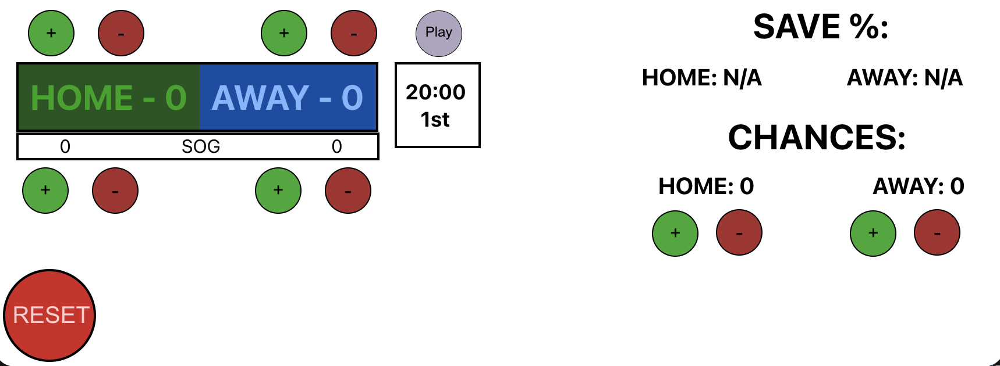
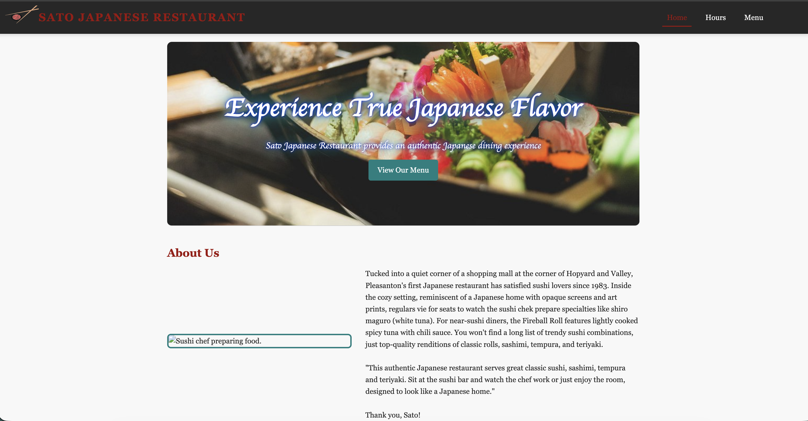

Selected Works

Saint Mary's Stockton Hockey
The Saint Mary's Stockton Boy's Hockey team (whom I play for) did not have a website. I took action and collaborated to make them a fantastic website
Website here →
Hockey Scoreboard
I noticed at our hockey games that shots were frequently miscounted. I made this to solve this problem
View App →
Practice Website
Here is a practice website I made for a small, family-owned sushi restaurant using HTML and CSS
View Github →